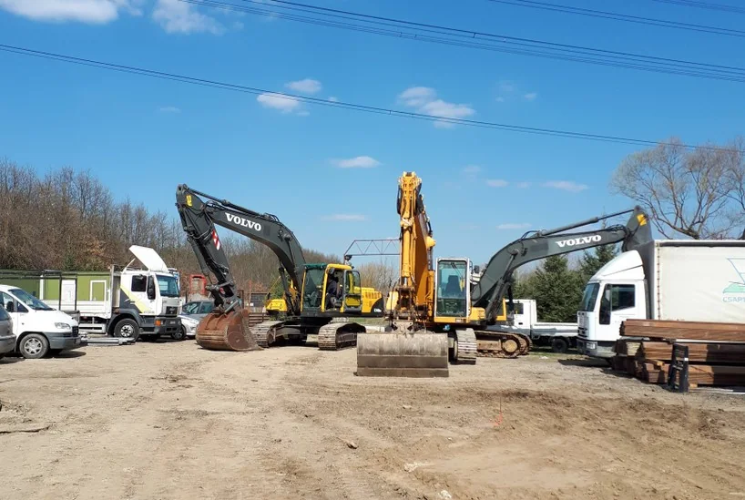
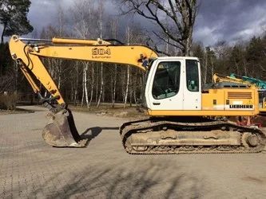
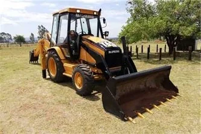
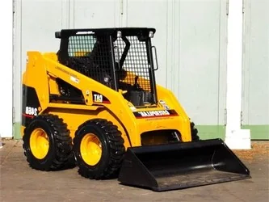
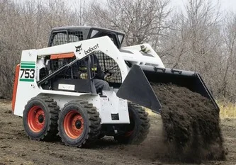
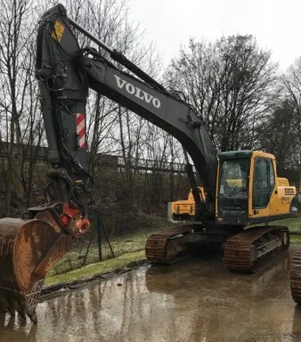

Gépi kivitelezés · Pest megye és Budapest
Földmunka, a feladathoz választott géppel.
Önálló földmunka és csatornázási projektek tapasztalt gépkezelőkkel.

A feladathoz illő munkagép.
Alapásás, pincetömb-kiemelés, árokásás, csatornázás és terület-előkészítés.
| Gép | Tömeg | Felhasználás | Kép |
|---|---|---|---|
| Liebherr 904 Litronic lánctalpas kotró | 21 t | Épületbontás, alapásás, pincetömb és medence kiemelése, rézsűkészítés |  |
| Caterpillar 428C traktoralapú kotró | 8 t | Tükörkészítés, árokásás, csatornázás, közműkiemelés |  |
| Caterpillar 246B rakodó | 3,4 t | Terület-előkészítés, planírozás, tükörkészítés |  |
| Bobcat 753 rakodó | 2,3 t | Terület-előkészítés, planírozás, tükörkészítés |  |
| Volvo 210 lánctalpas kotró | 24 t | Épületbontás, alapásás, pincetömb és medence kiemelése |  |
A gépek és a tömegadatok tájékoztató jellegűek. Az aktuális gépválasztás a helyszín és a feladat egyeztetése után történik.
Földmunka az ütemezéshez igazítva.
Elsődlegesen Pest megyében és Budapesten vállalunk munkát, a gép és a helyszín adottságai szerint.
- Munkaterület
- Elsődlegesen Pest megye és Budapest.
- Minimum rendelés
- 24 munkaóra.
- Óradíj
- Ajánlat alapján, a gép és a munkakörülmények szerint.
- Gépkezelő
- A munkadíj a szakképzett gépkezelő munkáját is tartalmazza.